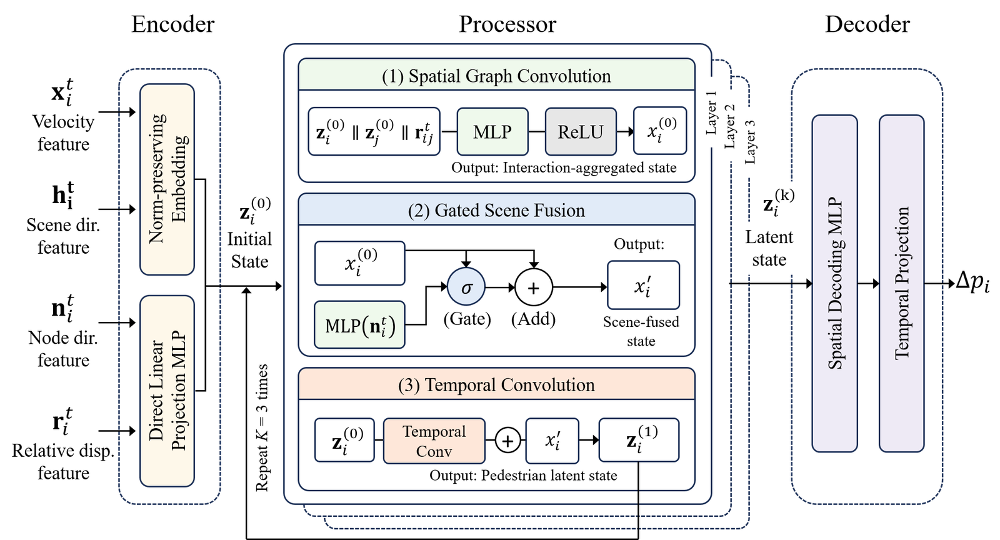
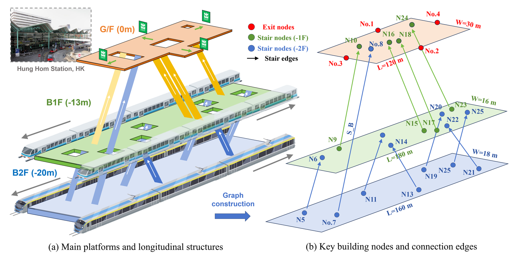
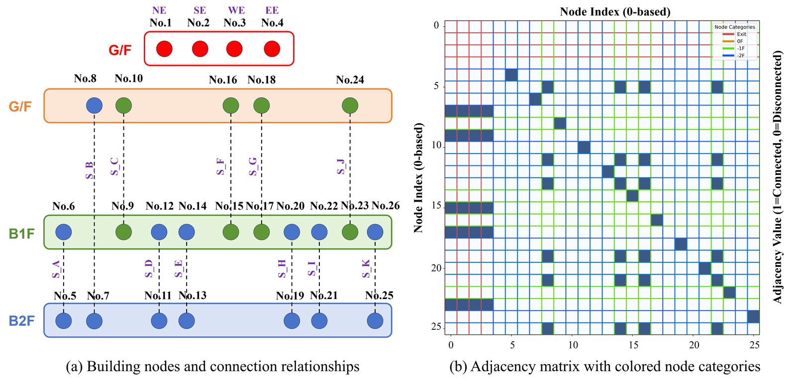
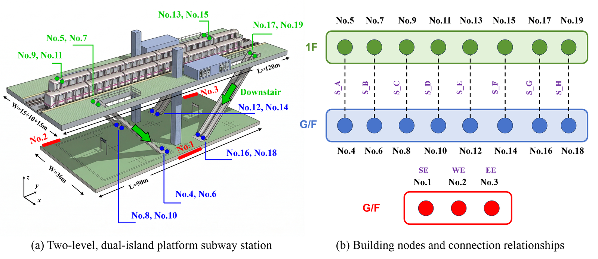

Research Center for Smart Urban Resilience and Firefighting — The Hong Kong Polytechnic University
Department of Bridge Engineering, School of Transportation, Southeast University
Emergency evacuation in large transit hubs poses critical safety challenges due to complex spatial topologies and nonlinear crowd dynamics. Traditional simulations and deep-learning models face limitations in computational efficiency, spatial representation, and generalization. To address this, the study proposes a spatiotemporal Graph Neural Network (GNN) framework that jointly abstracts evacuees and building environments into a unified interaction graph, explicitly encoding inter-pedestrian social forces and vertical boundary constraints via dynamic and static adjacency matrices under an encoder-processor-decoder architecture. Evaluated on 622 diverse multi-level cases, it achieves 88% accuracy and an RMSE of 10.82 s in macroscopic clearance-time prediction, maintaining high microscopic fidelity during 240-s continuous rollouts with average position deviation limited to 7.1 m, and demonstrates strong cross-layout generalization to an unseen station with reversed vertical evacuation direction.

The spatiotemporal GNN encoder-processor-decoder architecture for unified pedestrian-environment interaction modelling.

Metro Scene 1 — multi-level underground station layout used in Video 1 & 2.

Connection edges definition and adjacency matrix construction.

Metro Scene 2 — multi-level underground station layout used in Video 3 & 4.